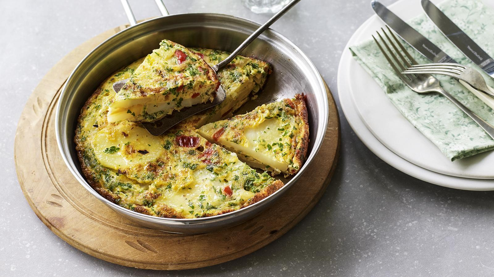

Spanish Tortilla

Simple fish pie to enjoy any time of the year. Make it up to 36 hours ahead before cooking and keep in the fridge.
Ingredients
- 3 tbsp olive oil
- 1 onion, thinly sliced
- ½ red pepper, seeds removed, finely chopped
- 225g peeled potatoes, cut into 1cm slices
- 4 large free-range eggs
- 1 tbsp finely chopped parsley
- salt and freshly ground black pepper
Method
- Heat 2 tablespoons of the oil in a small heavy-based frying pan that's about 20cm/8in in diameter. Add the onion and fry for 5 minutes.
- Add the pepper and potatoes and season with salt and pepper. Cover with a lid and gently cook over a low heat for about 15-20 minutes, or until the vegetables are soft and the potatoes are cooked through. Transfer to a bowl and wipe the pan clean.
- Beat the eggs in a bowl and season with salt and pepper. Pour the eggs into the bowl with the cooked mixture.
- Add the remaining oil to the pan. Carefully pour in the egg mixture and sprinkle with parsley. Cook on a medium heat until the sides and top have just set and the base is lightly golden-brown. When the middle is set, carefully slide onto a plate.
- Put the pan on top of the omelette and flip over to cook the other side for 3–4 minutes, or until golden-brown all over and just cooked through. Slide onto a plate to serve.